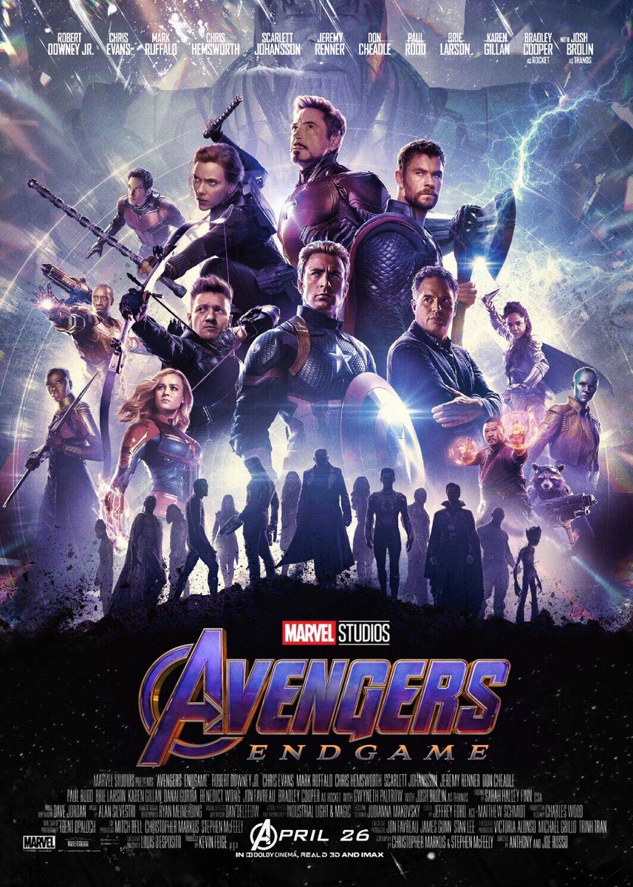
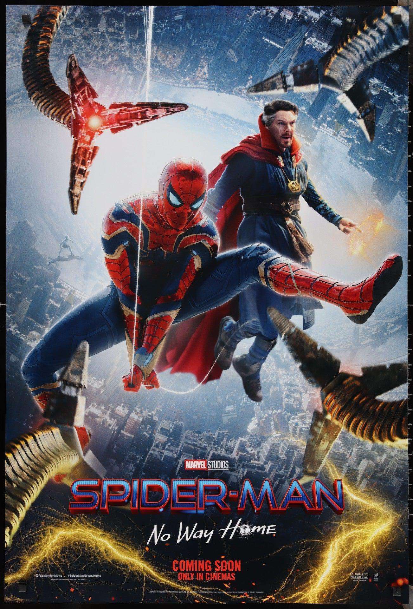
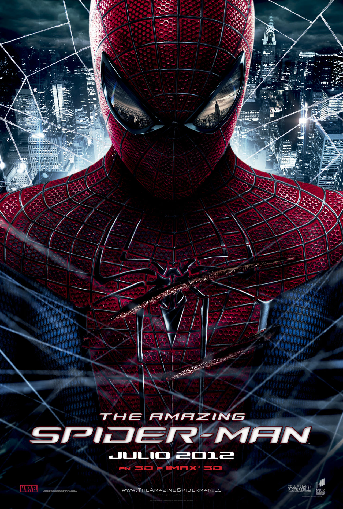
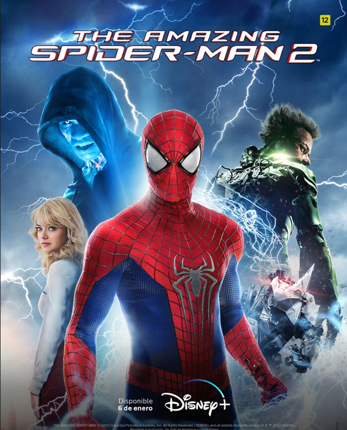

El caballero oscuro
Desc:Batman/Bruce Wayne (Christian Bale) regresa para continuar su guerra contra el crimen. Con la ayuda del teniente Jim Gordon (Gary Oldman) y del Fiscal del Distrito Harvey Dent (Aaron Eckhart), Batman se propone destruir el crimen organizado en la ciudad de Gotham. El triunvirato demuestra su eficacia, pero, de repente, aparece Joker (Heath Ledger), un nuevo criminal que desencadena el caos y tiene aterrados a los ciudadanos.

Vengadores: Endgame
Desc: Después de los eventos devastadores de 'Avengers: Infinity War', el universo está en ruinas debido a las acciones de Thanos, el Titán Loco. Con la ayuda de los aliados que quedaron, los Vengadores deberán reunirse una vez más para intentar deshacer sus acciones y restaurar el orden en el universo de una vez por todas, sin importar cuáles son las consecuencias... Cuarta y última entrega de la saga "Vengadores".

Spider-Man:No Way Home
Desc: Por primera vez en la historia cinematográfica de Spider-Man, nuestro héroe, vecino y amigo es desenmascarado, y por tanto, ya no es capaz de separar su vida normal de los enormes riesgos que conlleva ser un superhéroe. Cuando pide ayuda al Doctor Strange, los riesgos pasan a ser aún más peligrosos, obligándole a descubrir lo que realmente significa ser él. Secuela de 'Spider-Man: Far From Home'.

Wonka
Desc: La película de Paul King ('Paddington') cuenta también con Sally Hawkins, Rowan Atkinson, Jim Carter, Olivia Colman y Keegan-Michael Key, y contará la juventud del personaje, al que conocimos en las páginas de 'Un mundo de fantasía' de Roadl Dahl. Tras la macabra película de 1971 con Gene Wilder, y 'Charlie y la fábrica de chocolate' de Tim Burton en 2005 con Johhny Depp, esta película nos propondrá una versión musical y más fantasiosa que nunca.

Pelicula name
Desc: Como la mayoría de los adolescentes de su edad, Peter está intentando descubrir quién es y cómo ha llegado a ser lo que es. En su viaje para atar los cabos de su pasado descubre un secreto que guardaba su padre, un secreto que finalmente dará forma a su destino como Spiderman.

The Amazing Spider-Man 2
Desc:Peter Parker lleva una vida muy ocupada, compaginando su tiempo entre su papel como Spider-Man, acabando con los malos, y en el instituto con la persona a la que quiere, Gwen. Peter no ve el momento de graduarse. No ha olvidado la promesa que le hizo al padre de Gwen de protegerla, manteniéndose lejos de ella, pero es una promesa que simplemente no puede cumplir. Las cosas cambiarán para Peter cuando aparece un nuevo villano, Electro, y un viejo amigo, Harry Osborn, regresa, al tiempo que descubre nuevas pistas sobre su pasado.